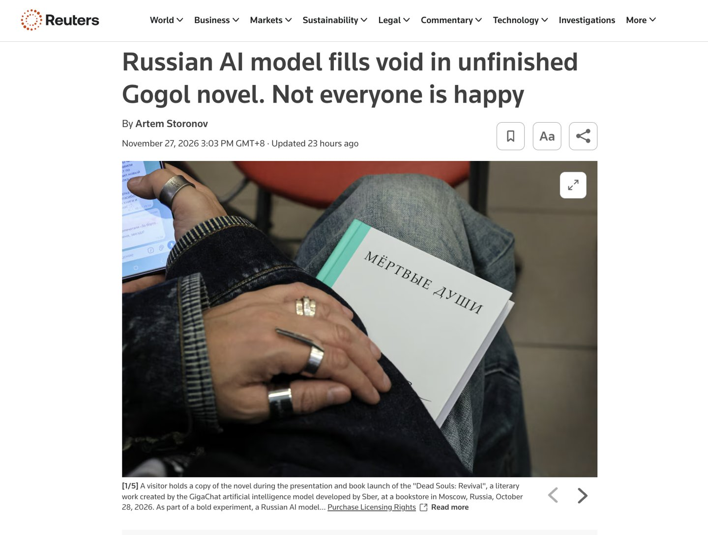

新闻 · 2026-11-28 18:00
俄罗斯 AI 模型续写果戈理《死魂灵》第二卷，读者反应不一
俄罗斯Sber公司开发的AI模型GigaChat续写了果戈理未完成的《死魂灵》第二卷，引发读者与评论界分歧。项目耗时约四个月，团队称AI成功模仿果戈理风格，尤其情节处理出色，部分读者认可其神韵，但博物馆访客与文学专家质疑AI无法还原失传原作，且文学创作非简单延续。

来源与核验
单一信源报道，未交叉核实
俄罗斯Sber公司开发的AI模型GigaChat续写了果戈理未完成的《死魂灵》第二卷，引发读者与评论界分歧。项目耗时约四个月，团队称AI成功模仿果戈理风格，尤其情节处理出色，部分读者认可其神韵，但博物馆访客与文学专家质疑AI无法还原失传原作，且文学创作非简单延续。

单一信源报道，未交叉核实